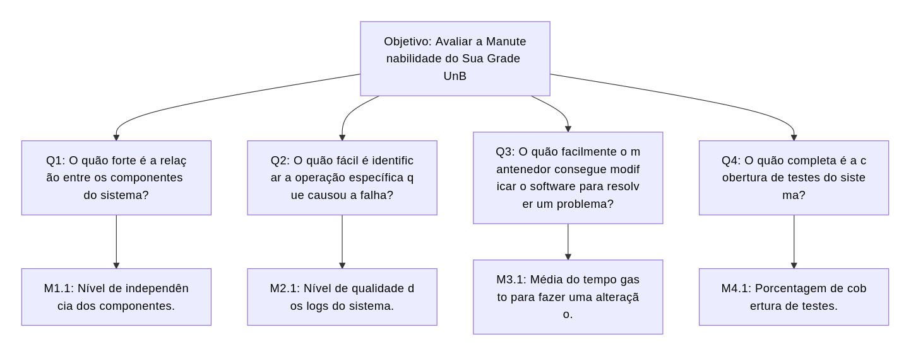

Medição 2 - Manutenibilidade¶
Objetivo de Medição 2 - Manutenibilidade¶
| Analisar | Sua Grade UnB |
|---|---|
| Para o propósito de | Avaliar |
| Com respeito a | Manutenibilidade |
| Do ponto de vista da | Equipe do projeto |
| No contexto da | Disciplina de Qualidade de Software 1 (FCTE - UnB) |
Perguntas e Hipóteses de Medição¶
Para alcançar o objetivo de medição para a característica de Manutenibilidade, abaixo foram elaboradas questões com suas respectivas hipóteses (as quais estabelecem metas que ilustram a qualidade atual do sistema a partir das métricas que serão estabelecidas posteriormente neste fragmento).
Manutenibilidade: grau de eficácia e eficiência na qual um sistema consegue ser modificado pelos mantenedores responsáveis.
Questão 1: Modularidade (Grau em que um sistema ou programa é composto por componentes discretos, de tal forma que a mudança em um tenha um impacto mínimo em outros componentes)
O quão forte é a relação entre os componentes do sistema?
- Hipótese 1.1 (H1.1): O nível de independência dos componentes do sistema é igual ou superior a 80%.
Questão 2: Analisabilidade (Grau de eficácia e eficiência com que é possível avaliar o impacto em um produto ou sistema de uma mudança pretendida em uma ou mais de suas partes, ou diagnosticar deficiências ou causas de falhas em um produto, ou identificar partes a serem modificadas.)
O quão fácil é identificar a operação específica que causou a falha?
- Hipótese 2.1 (H2.1): A qualidade dos logs do sitema é igual ou supeiror a 90%, sendo possível identificar as operações que causaram a falha.
Questão 3: Modificabilidade (Grau em que um produto ou sistema pode ser modificado de forma eficaz e eficiente, sem introduzir defeitos ou degradar a qualidade do produto existente.)
O quão facilmente o mantenedor consegue modificar o software para resolver um problema?
- Hipótese 3.1 (H4.1): O tempo gasto para o mantenedor fazer uma alteração é menor ou igual a 5 horas.
Questão 4: Testabilidade (Grau de eficácia e eficiência com que os critérios de teste podem ser estabelecidos para um sistema, produto ou componente, e os testes podem ser realizados para determinar se esses critérios foram atendidos.)
O quão completa é a cobertura de testes do sistema?
- Hipótese 4.1 (H4.1): A porcentagem de cobertura de testes é igual ou maior a 90%.
Seleção das Métricas¶
Questão 1: Modularidade
-
Métrica 1.1: Nível de independência dos componentes
- Definição: Quantidade de componentes que não dependem de outros dividido pela quantidade de componentes do sistema. Essa avaliação será feita para os módulos de Backend e Frontend (conforme detalhados na Fase 1 - Contexto da Avaliação)
- Fórmula:
(quantidade de componentes do sistema independentes) / (quantidade de componentes do sistema) -
Coleta:
- Calcular as classes ou módulos do sistema;
- Identificar as dependências delas;
- Aplicar a fórmula apontada acima.
-
Pontuação de Julgamento:
Excelente Bom Regular Insatisfatório 80% de independência 60% de independência 50% de independência >50% de independência - Propósito: Avaliar o nível de independência entre as classes do sistema.
Questão 2: Analisabilidade
-
Métrica 2.1: Nível de qualidade dos logs do sistema
- Definição: Quantidade de eventos, logs ou passos que o sistema efetivamente grava em produção enquanto roda dividido pela quantidade de dados planejados para serem registrados que seriam suficientes para monitorar o status do sistema/software durante a operação. Essa avaliação será feita para os módulos de Backend, Web Scraping e Frontend (conforme detalhados na Fase 1 - Contexto da Avaliação)
- Fórmula:
(quantidade de dados realmente registrados durante a operação) / (quantidade de dados planejados para serem registrados que seriam suficientes para monitorar o status do sistema/software durante a operação) -
Coleta:
- Mapeamento de operações críticas;
- Descoberta de quantos dados cada operação crítica registra;
- Uso de ferramentas de centralização de logs para verificação dos dados retornados; Ou verificação de quantos métodos de operações críticas possuem a chamada de funções de log.
- Aplicar a fórmula apontada acima.
-
Pontuação de Julgamento:
Excelente Bom Regular Insatisfatório 90% de qualidade 70% de qualidade 50% de qualidade >50% de qualidade - Propósito: Avaliar se o sistema gera informações suficientes para que, quando ocorra uma falha, seja possível descobrir exatamente qual operação a causou.
Questão 3: Modificabilidade
-
Métrica 3.1: Média do tempo gasto para fazer uma alteração
- Definição: Soma do tempo gasto para fazer alterações dividido pela quantidade de alterações.
- Fórmula:
(soma do tempo gasto para fazer alterações) / (quantidade de alterações realizadas) -
Coleta:
- Escolha de um período para a coleta de dados;
- Coleta do tempo entre uma issue passar de Em Andamento para Concluída;
- Uso de ferramentas de centralização de logs para verificação dos dados retornados; Ou verificação de quantos métodos de operações críticas possuem a chamada de funções de log;
- Aplicar a fórmula apontada acima.
-
Pontuação de Julgamento:
Excelente Bom Regular Insatisfatório 5 horas por alteração 8 horas por alteração 10 horas por alteração >10 horas por alteração - Propósito: Avaliar o quão fácil é para o mantenedor fazer alterações no sistema.
Questão 4: Testabilidade
-
Métrica 4.1: Porcentagem de cobertura de testes
- Definição: Quantidade de testes automatizados escritos dividida pela quantidade de cenários de teste que deveriam ter sido escritos. Essa avaliação será feita para os módulos de Backend, Web Scraping e Frontend (conforme detalhados na Fase 1 - Contexto da Avaliação)
- Fórmula:
(quantidade de testes automatizados escritos) / (quantidade de cenários de teste que deveriam ter sido escritos) -
Coleta:
- Rodar a suíte de testes para descobrir quantos casos de teste foram criados;
- Descobrir nas especificações do projeto quantos casos de teste deveriam ter sido criados;
- Aplicar a fórmula apontada acima.
-
Pontuação de Julgamento:
Excelente Bom Regular Insatisfatório 90% de cobertura de teste 70% de cobertura de teste 50% de cobertura de teste <50% de cobertura de teste - Propósito: Avaliar o nível da cobertura de testes do sistema.
Relação entre Manutenibilidade, Perguntas e Métricas¶

Histórico de Versão¶
| Versão | Data | Descrição | Autor(es) |
|---|---|---|---|
| 0.1 | 2026-06-09 | Criação inicial da página | Ana Clara Borges |
| 1.0 | 2026-06-12 | Adição de referências | Ana Clara Borges |
| 1.1 | 2026-06-23 | Adição o diagrama de relação entre Manutenibilidade, Perguntas e Métricas | Marllon Cardoso |